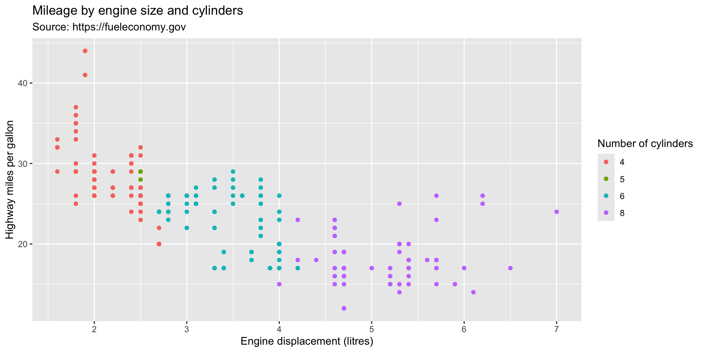
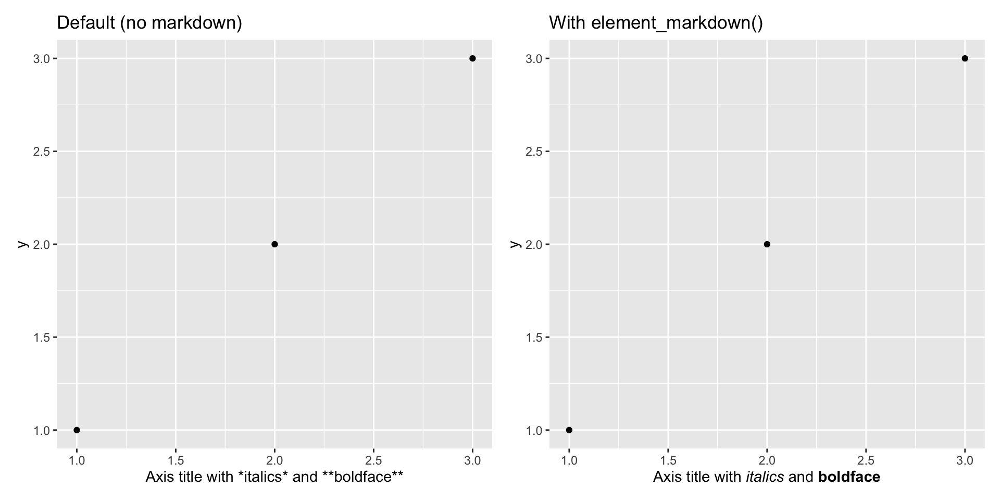
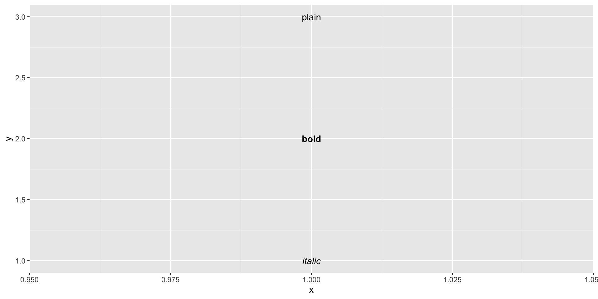
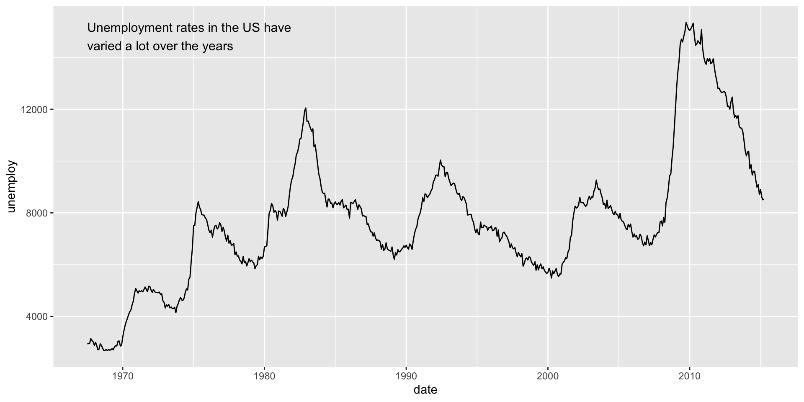
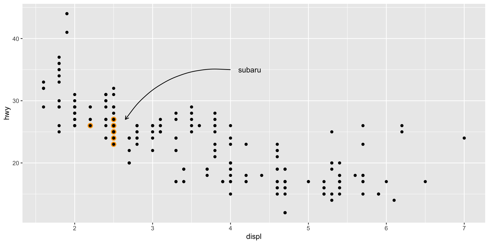

When building a data visualisation, supplying the plot itself is rarely sufficient — readers also need context. Annotations provide that context: they are metadata attached to the visual display that help readers interpret what they are seeing.
Conceptually, annotations are simply data about data. Because of this, ggplot2 implements annotations using the exact same geoms used for plotting data, with a small set of helper functions layered on top for convenience.
Chapter roadmap
Section 8.1 — Setting plot and axis titles with labs().
Section 8.2 — Adding text labels with geom_text() and geom_label().
Section 8.3 — Building custom annotations using geoms and annotate().
Section 8.4 — Direct labelling with directlabels, ggforce, and gghighlight.
Section 8.5 — Annotation across facets.
Plot and axis titles
Plot and axis titles
The labs() helper function provides a unified interface for setting all text labels associated with a plot: the main title, subtitle, caption, axis labels, and legend titles. Labels are specified as named arguments using the aesthetic or label name as the key:
library(ggplot2)library(patchwork)a <-ggplot(mpg, aes(displ, hwy)) +geom_point(aes(colour =factor(cyl))) +labs(x ="Engine displacement (litres)",y ="Highway miles per gallon",colour ="Number of cylinders",title ="Mileage by engine size and cylinders",subtitle ="Source: https://fueleconomy.gov" )
a

Mathematical expressions in labels
Label values are usually plain character strings, with \n used to insert line breaks. When a label requires a mathematical expression, wrap it in quote() and use R’s plotmath syntax. The available symbols and operators are documented at ?plotmath:
values <-seq(from =-2, to =2, by = .01)df <-data.frame(x = values, y = values ^3)ggplot(df, aes(x, y)) +geom_path() +labs(y =quote(f(x) == x^3))
Markdown in labels with ggtext
The ggtext package (Wilke 2020) enables a subset of Markdown syntax — italics, bold, inline HTML — to be rendered inside axis and legend titles. To activate Markdown rendering for a specific element, set the corresponding theme element to ggtext::element_markdown():
df <-data.frame(x =1:3, y =1:3)base <-ggplot(df, aes(x, y)) +geom_point() +labs(x ="Axis title with *italics* and **boldface**")p1 <- base +ggtitle("Default (no markdown)")p2 <- base +theme(axis.title.x = ggtext::element_markdown()) +ggtitle("With element_markdown()")p1 | p2

Removing axis labels
Two strategies exist for removing an axis label, and they behave differently:
labs(x = "") — removes the label text but preserves the space it would have occupied.
labs(x = NULL) — removes both the label text and its allocated space, bringing the axis closer to the plot panel.
The relationship between labs() and the underlying scale name system is discussed further in Chapter 14.
Text labels
Text labels
Adding text directly to a plot is one of the most common annotation techniques. While labelling every data point is rarely advisable, flagging outliers, notable observations, or small groups of interest is highly effective.
The primary geom for text annotation is geom_text(), which places a label string at a specified (x, y) position. It exposes more aesthetics than almost any other geom in ggplot2.
The family aesthetic — font selection
The family aesthetic accepts a font name. Three values are guaranteed to render correctly on all platforms and output devices:
"sans" — a sans-serif font (the default).
"serif" — a serif font.
"mono" — a monospace font.
df <-data.frame(x =1, y =3:1, family =c("sans", "serif", "mono"))ggplot(df, aes(x, y)) +geom_text(aes(label = family, family = family))
Font rendering across graphics devices
System fonts beyond the three guaranteed values may not render consistently across all graphics devices (screen vs. file). Two packages address this:
Each approach has trade-offs; it is worth testing both in your workflow.
The fontface aesthetic — text style
fontface accepts three values controlling the typographic weight and slant of the text:
df <-data.frame(x =1, y =3:1, face =c("plain", "bold", "italic"))ggplot(df, aes(x, y)) +geom_text(aes(label = face, fontface = face))

The hjust and vjust aesthetics — alignment
hjust (horizontal justification) and vjust (vertical justification) control how a label is positioned relative to its anchor point. Both accept named strings or numeric values in [0, 1].
Particularly useful values are "inward" / "outward", which align text towards or away from the centre of the plot regardless of the label’s position — ensuring that labels stay within the plot boundaries:
Font size is specified in millimetres (mm), not points. This keeps text sizes consistent with the units used for all other size aesthetics in ggplot2. To convert from points to mm: multiply by 25.4 / 72.27.
The angle parameter — rotation
angle rotates the label by the specified number of degrees, measured counter-clockwise from horizontal.
Nudging labels — nudge_x and nudge_y
When labelling existing data points, overlapping text and points is a common problem. The nudge_x and nudge_y parameters shift the label by a fixed amount relative to the data point, without altering the position used for the x/y aesthetics:
Setting check_overlap = TRUE automatically suppresses labels that would overlap previously plotted labels. Labels are evaluated in data frame row order — earlier rows take priority. If you sort your data by importance before plotting, the result is a label set that emphasises the most important observations:
geom_label() is a variant of geom_text() that draws a rounded rectangle behind the text. The opaque background ensures legibility on complex or colourful plot backgrounds:
Labels do not expand plot limits. Because a label has a fixed physical size (e.g., 3 cm) that is independent of plot dimensions, ggplot2 cannot automatically expand the plot boundaries to accommodate it. Adjust xlim() / ylim() manually.
Avoiding overlap with many labels. The ggrepel package (https://github.com/slowkow/ggrepel) by Kamil Slowikowski provides geom_text_repel(), which optimises label placement to minimise overlaps:
Fitting labels inside bars or tiles. The ggfittext package by Claus Wilke provides geoms that automatically resize or trim text to fit within a specified bounding region.
Building custom annotations
Building custom annotations
Beyond text labels, ggplot2 provides several geoms suited to annotating specific types of information. These geoms work exactly like data-plotting geoms — they accept either a separate data frame or are placed using the annotate() helper function.
geom_segment() / geom_line() / geom_path() — draw line segments or paths; all accept an arrow argument for arrowheads (created with arrow(angle, length, ends, type)).
geom_curve() — draws a curved arc between two points; useful for connecting a label to a data point.
geom_vline() / geom_hline() / geom_abline() — draw reference lines spanning the full extent of the plot.
Using -Inf and Inf as position values
When a geom should extend to the very edge of the plot panel — regardless of the data range — use -Inf (bottom/left limit) and Inf (top/right limit) as position values. This is especially useful for geom_rect() when creating background shading.
Example: annotating a time series with presidential terms
The economics dataset records US unemployment over time. We will overlay shaded rectangles indicating presidential terms, vertical lines at term boundaries, and president name labels, using four separate layers:
Each layer draws from its own data frame — note how data = presidential_sub is specified inside each annotation geom while geom_line() inherits the default economics data. This is the standard pattern for mixing annotation data with the primary dataset.
annotate() — a shorthand for single annotations
Adding a single annotation via a geom requires constructing a one-row data frame, which is verbose. The annotate() helper function constructs this data frame internally:
# Verbose approach (using a data frame)ggplot(economics, aes(date, unemploy)) +geom_line() +geom_text(aes(x, y, label = caption),data =data.frame(x = xrng[1], y = yrng[2], caption = caption),hjust =0, vjust =1, size =4 )
# Concise approach using annotate()yrng <-range(economics$unemploy)xrng <-range(economics$date)caption <-paste(strwrap("Unemployment rates in the US have varied a lot over the years", 40), collapse ="\n")fig <-ggplot(economics, aes(date, unemploy)) +geom_line() +annotate(geom ="text", x = xrng[1], y = yrng[2],label = caption, hjust =0, vjust =1, size =4 )
fig

Highlighting a subset with manual annotation
A common pattern is to highlight a subgroup by plotting it twice — once with a larger, differently-coloured point underneath the main scatter layer — and then labelling it with annotate():
p <-ggplot(mpg, aes(displ, hwy)) +geom_point(data = dplyr::filter(mpg, manufacturer =="subaru"),colour ="orange", size =3 ) +geom_point()p +annotate(geom ="point", x =5.5, y =40, colour ="orange", size =3) +annotate(geom ="point", x =5.5, y =40) +annotate(geom ="text", x =5.6, y =40, label ="subaru", hjust ="left")
Curved connectors with geom_curve()
When a label must be placed away from its target to avoid clutter, geom_curve() draws a curved arc with an optional arrowhead to visually connect the two. Use curvature to control the arc’s degree of bending (positive = clockwise, negative = counter-clockwise):
p +annotate(geom ="curve",x =4, y =35, xend =2.65, yend =27,curvature = .3,arrow =arrow(length =unit(2, "mm")) ) +annotate(geom ="text", x =4.1, y =35, label ="subaru", hjust ="left")

Direct labelling
Direct labelling
Direct labelling refers to the practice of placing group labels directly on the plot — adjacent to or within the data they identify — rather than in a separate legend. This approach typically reduces the visual distance between a label and its data, making the chart faster to read.
Three packages in the broader ggplot2 ecosystem provide tools for automated direct labelling.
directlabels — smart label placement
The directlabels package (Hocking) provides geom_dl(), which adds group labels at algorithmically determined positions. The method argument selects a placement strategy:
"smart.grid" is a good default for scatterplots. For line plots and frequency polygons, other methods (e.g., "last.points", "angled.boxes") are more appropriate. See the directlabels website (http://directlabels.r-forge.r-project.org) for a complete catalogue.
ggforce — ellipse highlight marks
The ggforce package (Pedersen) extends ggplot2 with a range of specialised geoms, including geom_mark_ellipse(). This geom draws an elliptical highlight around each group of points and adds a label, making group membership immediately apparent without a legend:
The gghighlight package (Yutani) is designed to visually emphasise a subset of observations while showing the full dataset in the background for context. It is particularly effective for longitudinal or grouped data:
The highlighted subjects are drawn in full colour; all other trajectories are rendered in a muted grey, providing the visual context of the whole dataset without competing for attention.
Annotation across facets
Annotation across facets
Annotations become especially powerful in faceted plots, where they can provide a shared visual reference that makes between-panel comparisons easier.
Motivating example: faceted diamond price vs carat
The plot below facets the relationship between log10(carat) and log10(price) by diamond cut. The within-facet relationship is clear, but the subtle differences in slope or intercept across cut grades are difficult to perceive without a reference:
Fitting a single regression line to the full dataset and overlaying it in every facet gives the eye a fixed reference. Deviations from this line — or differences in the cloud’s position relative to the line — now pop out visually:
Each facet now shows its data relative to the same regression line, making cross-facet comparisons unambiguous. Using a white line against the 2D bin colour scale makes it legible without overpowering the data.
gghighlight inside facets — greyed background data
Another effective pattern is to facet by group while showing the full dataset greyed out in every panel. Each facet highlights one group in colour while all other data remains visible for context. gghighlight::gghighlight() with no filtering argument achieves this automatically:
Each panel foregrounds the data for one cylinder group while maintaining the full context of the dataset in grey. This technique elegantly combines the detail of faceting with the contextual richness of showing all data simultaneously.